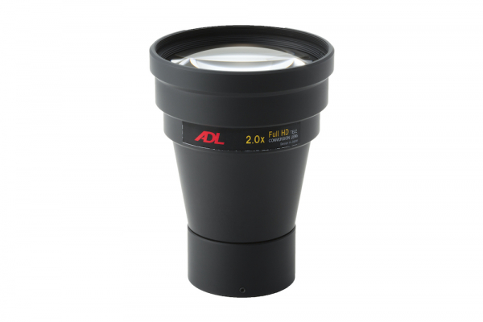
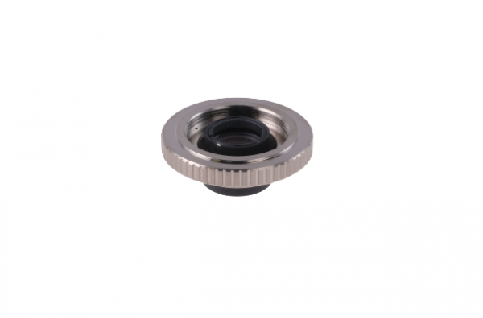
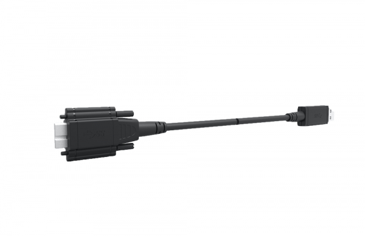

FTC-2X
| 光学ガラス3群5枚構成 | |
| 装着後もカメラの解像度を維持(フルHD) | |
| カメラの明るさ(F値)を維持 | |
| 焦点距離を2倍 |
*備考: ワイド端側でケラレあり
PRODUCTS
2倍フロントテレコンバーター他、ユニークな製品を取り扱い

| 光学ガラス3群5枚構成 | |
| 装着後もカメラの解像度を維持(フルHD) | |
| カメラの明るさ(F値)を維持 | |
| 焦点距離を2倍 |
*備考: ワイド端側でケラレあり

| 1.2倍エクステンダー | |
| 焦点距離を1.2倍の望遠にする時、レンズとカメラの間に装着する。また1/1.8"レンズ（弊社指定レンズ）に装着すると2/3"イメージフォーマットまでカバー出来るようになる。 |

| メインコネクター | USB 3.0 Standard A type |
|---|---|
| サブコネクター | Micro-B type w/ Locking Screw |
| 重量 | 385g (10m) |
| ケーブル幅 | 4.8mm |
| ケーブル長さ | 10m/20m |
| 曲げ半径 | 50mm |
| 電源 | 4.75v ~ 5.25v |
| 供給電流 | < 200mA |
| 消費電流 | 900 mA |
| 作動温度 | 0 ~ 50 ℃ |
| 湿度 | 15 ~ 85% |
| 印加電圧 | 700 ~ 1060hPA |
| RoHS | ● |
| CE / UL規格 | ● |
（C）2026 株式会社AMS